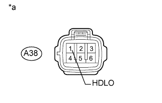

СИСТЕМА СТЕКЛООЧИСТИТЕЛЕЙ И СТЕКЛООМЫВАТЕЛЕЙ > Сигнальная цепь фар |
| 1.ПРОВЕРЬТЕ РЕЛЕ УПРАВЛЕНИЯ ОЧИСТИТЕЛЕМ ФАР (НАПРЯЖЕНИЕ HDLO) |
|  |
Отсоедините разъем A38 реле управления очистителем фар.
Измерьте напряжение в соответствии со значениями, приведенными в таблице.
| Контакты для подключения диагностического прибора | Положение переключателя | Заданные условия |
| A38-1 (HDLO) - масса | Переключатель света фар в положении HEAD | 11–14 В |
| A38-1 (HDLO) - масса | Переключатель света фар не в положении HEAD | Менее 1 В |
| *a | Устройство с подсоединенным жгутом проводов (управляющее реле очистителя фар) |
|
| ||||
| OK | ||
| ||